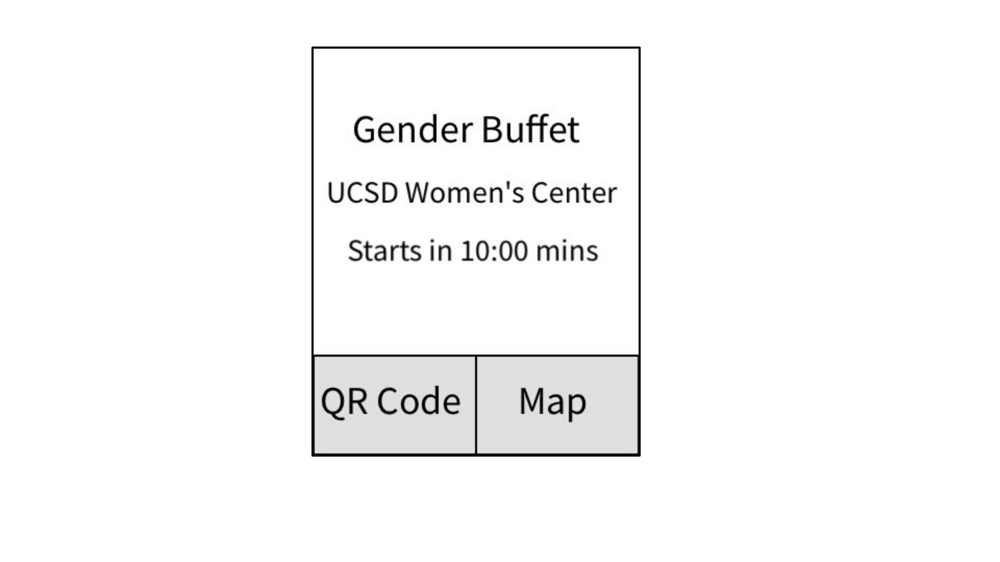

Persona:
inch: Mary is a commuter. She just finished one of her class, but her next class is not until 3 hours later. She does not where to go, so she starts walking towards muir college where her next lecture is located. On her way, she wonders if there are any interesting events going on that she can probably peek at or have some snacks.
Foot: Mary is trying to organize her next schedule and want to check out any events she can go that does not conflict with her lectures and other activities.
Yard: Mary and her friends are in price center having lunch, they want to check out events on campus this week to go together. They have many interests, they want to go to some talks or panels that also provide some food with it.

